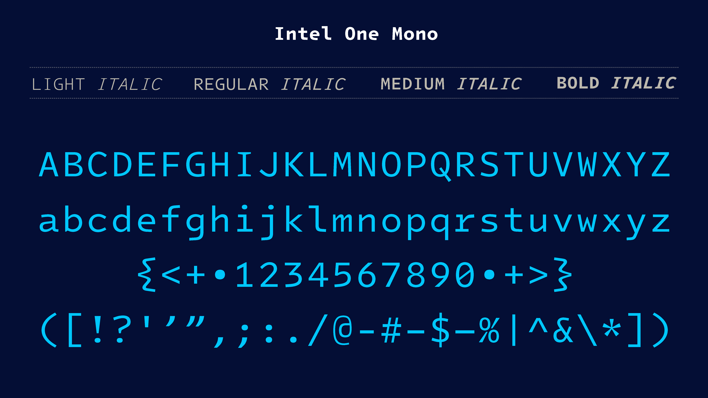

Intel One Mono フォントに換装する

五十路に入ってからから近視・乱視・老眼の三重苦になり，2種類の眼鏡を使い分けてるのだが，特にモニタでプログラム・コードを読むのがしんどくなりつつある。
というところで以下の記事を見かけた。
ひょっとしてこれは私向きか？

私は古い人間なので，ゼロは “$\emptyset$” (empty set) みたいに斜線が入ってないと嫌なのよ（だから今までずっと Inconsolata を使っていた）。
数字の 1 と大文字の I と小文字の l，小文字の i と j の区別も分かりやすいし，記号類もデフォルメされてる感じで見やすい。
これならイケそうかな。
早速ローカルにインストールしてみよう。
リポジトリのリリースページにある最新版の otf.zip (zip 圧縮されている) を取ってくる。
Ubuntu の場合は，展開して取得した *.otf ファイルを全て /usr/local/share/fonts/ または ~/.local/share/fonts/ ディレクトリに放り込めばOK。
その後
$ fc-cache -fv
でフォントキャッシュを更新するのを忘れないように。 上手くインストールできれば
$ fc-list | grep Intel
/usr/local/share/fonts/IntelOneMono-Light.otf: Intel One Mono,Intel One Mono Light:style=Light,Regular
/usr/local/share/fonts/IntelOneMono-Italic.otf: Intel One Mono:style=Italic
/usr/local/share/fonts/IntelOneMono-Medium.otf: Intel One Mono,Intel One Mono Medium:style=Medium,Regular
/usr/local/share/fonts/IntelOneMono-Regular.otf: Intel One Mono:style=Regular
/usr/local/share/fonts/IntelOneMono-MediumItalic.otf: Intel One Mono,Intel One Mono Medium:style=Medium Italic,Italic
/usr/local/share/fonts/IntelOneMono-LightItalic.otf: Intel One Mono,Intel One Mono Light:style=Light Italic,Italic
/usr/local/share/fonts/IntelOneMono-Bold.otf: Intel One Mono:style=Bold
/usr/local/share/fonts/IntelOneMono-BoldItalic.otf: Intel One Mono:style=Bold Italic
みたいな感じにリスト表示できる。
VS Code で Intel One Mono フォントを使うには “Font Family” 項目で
{kind=link}
という感じに 'Intel One Mono' または 'Intel One Mono Medium' を最初に指定すればよい。
VS Code は複数フォントを（並び順で優先順位を決めて）指定できるのが嬉しい。
リポジトリを見ると現在最新の V1.4.0 のリリースは 2024-07-26 らしい。 これって Google Fonts にも収録されている？ と思って探したらありました。
ってことは，Web フォントとしても使えるってことか。 このブログサイトでの設定は以下のようにしてみた。
<link rel="preconnect" href="https://fonts.googleapis.com">
<link rel="preconnect" href="https://fonts.gstatic.com" crossorigin>
<link href="https://fonts.googleapis.com/css2?family=BIZ+UDGothic:wght@400;700&family=BIZ+UDMincho:wght@400;700&family=Intel+One+Mono:ital,wght@0,300..700;1,300..700&family=Noto+Color+Emoji&family=Noto+Sans:ital,wght@0,100..900;1,100..900&family=Noto+Serif:wght@100..900&display=swap" rel="stylesheet">
試しに何かコードを表示してみよう。 今年の始めに紹介した2025年の干支を求める Go プログラムを表示してみる。
package main import ( "fmt" "github.com/goark/koyomi/zodiac" ) func main() { year := 2025 干, 支 := zodiac.ZodiacYearNumber(year) fmt.Printf("%d年は%v%v，恵方は%v (%v°)", year, 干, 支, 干.DirectionJp(), 干.Direction()) }
上手く表示できてるかな。 皆さんの環境ではどうだろう。
括弧などの記号が見やすいのがよい。 エディタと Web フォントは Intel One Mono でいこう。 私文書は Inconsolata のままでいいかな。 そもそも紙（含PDF）に書くような文書でコードを書くことは少ないしな。